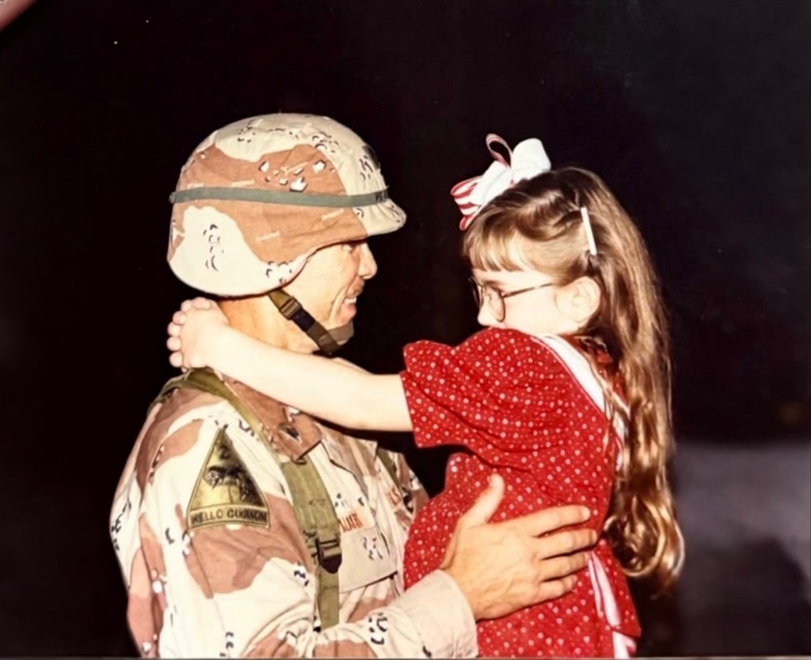

Specialized behavioral health and neuropsychological care for special operations forces, first responders, and the families who carry the weight alongside them.
"Find Light in the Shadows"
You chose a life most people can't comprehend — extreme operational demands, prolonged separation, the weight of things that can't be unseen. Alpha Neuro exists because that life deserves specialized, stigma-free mental health support grounded in evidence and earned trust. Whether you're a special operator, a first responder, or the family holding everything together — we don't just understand your world. We were shaped by it.
From special operators and first responders to the families who hold everything together — our practice is built for those who have given the most.
Army Special Forces, Rangers, 160th SOAR, SEAL Teams, Marine Raiders, AFSOC, JSOC — we understand your world, your culture, and your hesitations about seeking help.
The transition out doesn't end the mission — it changes it. We help SOF veterans navigate identity shifts, reintegration, and the invisible wounds that don't care about your discharge date.
Spouses managing everything alone, children growing up through deployments, families processing what comes home — your sacrifice is real and you deserve dedicated support too.
Law enforcement, firefighters, paramedics, and dispatchers — you share the same hypervigilance, cumulative trauma, and stigma as your military counterparts. We speak that language too, and your family deserves support just as much as you do.
Grief with no roadmap. We provide compassionate, trauma-informed support for those who carry the irreversible loss of a fallen warrior.
Military and first responder kids carry invisible weight — frequent moves, absent parents, and the stress that comes home even when a parent does. We offer age-appropriate therapy tailored to this unique experience.
In the SOF and first responder communities, asking for help can feel like a threat to your clearance, your career, or how your teammates see you. We know the stigma is real. We also know that untreated trauma, moral injury, and operational stress don't stay contained — they affect your mission readiness, your marriage, and your kids.
Our team brings lived experience from inside these worlds — as an Army brat and a retired Green Beret. There is no judgment here — only clinical expertise and genuine respect for what you've done and what you carry.
"You don't lose your edge by getting support. You sharpen it."
Specialized care for Moral Injury, Combat PTSD, TBI-related behavioral changes, MST, and reintegration.
Evidence-based, trauma-informed interventions — from one-on-one therapy to comprehensive neuropsychological assessment.
One-on-one sessions addressing combat trauma, PTSD, moral injury, depression, anxiety, TBI-related behavioral changes, identity transition, and reintegration challenges.
Operational tempo and deployments put immense strain on relationships. We help couples rebuild communication, intimacy, and trust — before and after service.
Whole-family support addressing the systemic impact of military service — from managing deployment cycles to homecoming reintegration and transition to civilian life.
Age-appropriate, play-based and talk therapies helping military children process anxiety, grief, frequent relocation stress, and the emotional absence of deployed parents.
Eye Movement Desensitization and Reprocessing is one of the most evidence-supported treatments for combat PTSD and trauma. It works where talk therapy alone often can't reach.
Brain-based therapy that directly targets the nervous system dysregulation driving hypervigilance, sleep disruption, irritability, and emotional dysregulation — common in operators post-deployment.
Structured, goal-oriented therapy targeting the thought patterns and behaviors that amplify anxiety, depression, and PTSD symptoms. Results-focused — you'll know what you're working toward.
Comprehensive cognitive and psychological evaluation for TBI, ADHD, learning, and emotional functioning. Critical documentation for medical boards, disability claims, and treatment planning.
We don't run a cookie-cutter practice. SOF culture demands a different clinical approach — one that respects your autonomy, doesn't waste your time, and uses the most effective tools available.
Every intervention is built on a foundation of understanding how trauma reshapes the brain, body, and relationships.
We speak your language — tactically and clinically. No need to translate or justify your world to us.
Mind, body, and relationships are interconnected. We treat the whole person, not just the presenting symptoms.
We set clear goals and measure progress. Your time is valuable — therapy should move you forward.
Clinicians who know the military and SOF community from the inside — as practitioners, veterans, and military family.

Dr. Pearson-Allen brings more than 15 years of clinical experience to a practice she built from the ground up with the military community in mind. As an Army brat who grew up inside the culture, she understands the world you operate in — not just clinically, but personally.
Her approach combines deep expertise in trauma, neuropsychology, and evidence-based intervention with the kind of directness and cultural fluency that makes treatment actually work for operators and their families. She doesn't just treat the condition — she treats the person who has been shaped by service.
Brandon is a psychometrist and psychology intern at Alpha Neuro. He is a retired U.S. Army Green Beret with 20 years of service in Special Operations, including multiple overseas tours to Afghanistan, Africa, and Europe. After his military career, he turned to psychology, with a particular interest in trauma, neuropsychological assessment, and mental health care for veterans and first responders.
His experience includes inpatient psychiatric care, neuropsychological testing, and crisis support through military non-profit organizations. He is completing his bachelor's degree in psychology in fall 2026 and will begin a Master of Social Work (MSW) program in fall 2027, with the goal of becoming a licensed clinical social worker.
We've made it as simple as possible to get the support you've earned.
Not sure if you qualify? Call us — we'll help you figure it out.
Virtual options available for deployed spouses and family members.
You've navigated harder things than a phone call. Reach out — we'll take care of the rest. Scheduling is simple, confidential, and judgment-free.
All inquiries are confidential. We understand the sensitivity of mental health records in the military community and take your privacy seriously.
We'll be in touch within one business day. Thank you for taking this step.